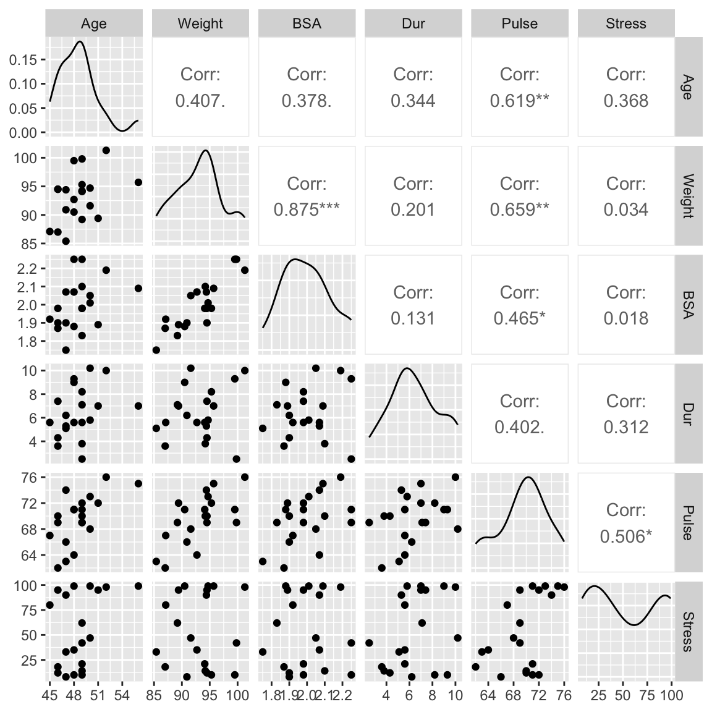
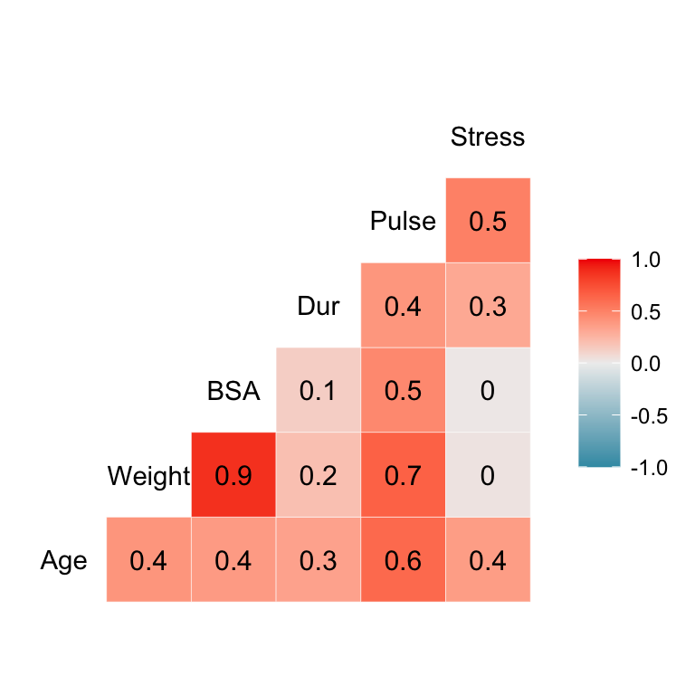

bp <- read.table('http://sldr.netlify.com/data/bloodpress.txt',
header=TRUE)11 Collinearity and Multicollinearity
Problematic collinearity and multicollinearity happen when two (collinearity) or more than two (multicollinearity) predictor variables are highly correlated with each other.
This can result in variance inflation: our uncertainty estimates (standard errors of coefficients, and confidence intervals on predictions) get bigger. Basically, if several predictors bear a lot of the same information, it can be hard for the model-fitting process to “allocate” the relationship between that predictor information and the response variable - it is “not sure” which predictor has which effect.
11.1 Graphical Checks
There are two functions in the package GGally that we can use to visualize the level of correlation between predictor variables.
As a simple example, let’s consider a small dataset on blood pressure and other variables for 20 adults with high blood pressure. It contains variables:
- patient number (
Pt) - blood pressure (
BPin mm Hg) Agein years- Weight, in kg
- body surface area (
BSA, in \(m^2\)) - duration of hypertension (
Dur, in years) - basal pulse (
Pulse, in beats per minute) - stress index (
Stress)
Imagine we want to predict BP as a function of the other variables in the dataset. How can we use a plot to check whether any of the predictors at (too) correlated with each other?
11.1.1 Preferred option: Correlation Scatter Plot
library(GGally)
bp2 <- bp |> dplyr::select(Age, Weight, BSA, Dur, Pulse, Stress)
ggpairs(bp2)
11.1.2 Another option: Heat map of correlation coefficients
# label=TRUE input adds numeric corr coef labels
ggcorr(bp2, label=TRUE)
11.1.3 How to use this information
But how do we know how much correlation is too much? Some people suggest excluding predictors from a model if their pairwise correlation is above about 0.8, but that is a very arbitrary rule; sometime model estimate works just fine in the face of that much correlation. In other cases correlation of each pair of variables is low, but there is multicollinearity (a group of variables that predicts one other variable very well). Having a look at the data is always useful, but what else can we do to decide which predictors to include or exclude?
So, one solution is to decide if there is “too much” collinearity or multicollinearity, and if there is “too much” for a given predictor, remove that one from the model.
There are also other options - model fitting techinques that get around the problem in other ways. (Key words in this arena are things like “lasso” and “neural net regression”). We will likely not have time to consider these in our class.
11.2 Variance Inflation Factors
A more precise way to check for collinearity and multicollinearity is to use VIFs. To get them, we will use the function vif() from package car (Companion to Applied Regression).
But…what are the actually measuring?
\[VIF = \frac{1}{1 - R^2_i}\]
Where
\[R^2_i\] is the \(R^2\) value for a regression model with the \(i\)th predictor as the response variable, and all the other predictors as a predictor. So \(R^2_i\) measures how well values of predictor \(i\) can be estimated based on the other predictors. High \(R^2_i\) indicates a predictor that is redundant, providing the same information as other predictors.
Since \(R^2_i\) is in the denominator of the \(VIF\) expression, larger VIFs indicate more problematic correlations between predictors.
Note: an alternate interpretation of VIFs is that they measure the factor by which variance of model coefficient estimates is “inflated” due to collinearity between predictors. Big is still bad, because big VIF means inflated (high) uncertainty.
11.2.1 Quantitative predictors (VIFs)
For our blood pressure example:
library(car)
m1 <- lm(BP ~ Age + Weight + BSA + Dur + Pulse + Stress, data=bp)
vif(m1) Age Weight BSA Dur Pulse Stress
1.762807 8.417035 5.328751 1.237309 4.413575 1.834845 m2 <- lm(BP ~ Age + BSA + Dur + Pulse + Stress, data=bp)
vif(m2) Age BSA Dur Pulse Stress
1.703115 1.428349 1.237151 2.360939 1.502936 11.2.2 (Some) Categorical Predictors (GVIFs)
What if some predictors are categorical? In this case, vif() will report generalized VIFs (GVIFs) and scaled GVIFs (\(GVIF^{\frac{1}{2DF}}\)).
11.2.3 Rules of Thumb
If a VIF (or squared scaled GVIF) is 1, that means there is no added uncertainty in model estimates because of collinearity. If VIF (or squared scaled GVIF) is greater than 4, then there’s a problem and you should probably try to fix it; if VIF (or squared scaled GVIF) is more than 10, then something definitely must be done to correct the problem.
As suggested above…To use these rules of thumb with scaled GVIFs (\(GVIF^{\frac{1}{2DF}}\)), square the scaled GVIF value before applying the rule.
Let’s look at an example from the built-in R dataset Duncan, which has data from 1950 on characteristics of different professions (type ?Duncan in R if you want more info on the data).
If we only include quantiative predictors, we get VIFs as before:
m2 <- lm(prestige ~ income + education, data=Duncan)
vif(m2) income education
2.1049 2.1049 If we include a categorical predictor, then we get GVIFs:
m3 <- lm(prestige ~ income + education + type, data=Duncan)
vif(m3) GVIF Df GVIF^(1/(2*Df))
income 2.209178 1 1.486330
education 5.297584 1 2.301648
type 5.098592 2 1.502666In this case, it seems that the only apparent problem is with the education variable in the three-predictor model. We might try to correct this by excluding the education predictor. If we do, we see that the \(R^2\) value of the model will not decrease by very much (since most of the information encoded in the education variable was already present in the others):
summary(m3)$r.squared[1] 0.9130657m4 <- update(m3, . ~ . -education)
summary(m4)$r.squared[1] 0.892986411.3 Was it worth it?
(How would we have done at sorting this out using graphical methods only? Check by creating a pairwise scatterplot using the Duncan data on your own.)